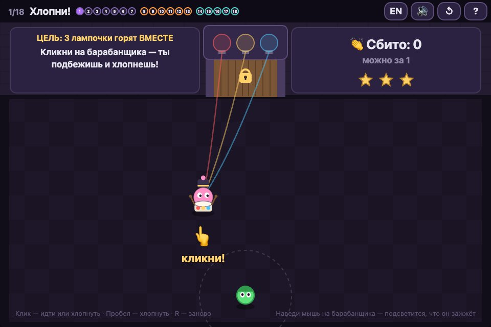
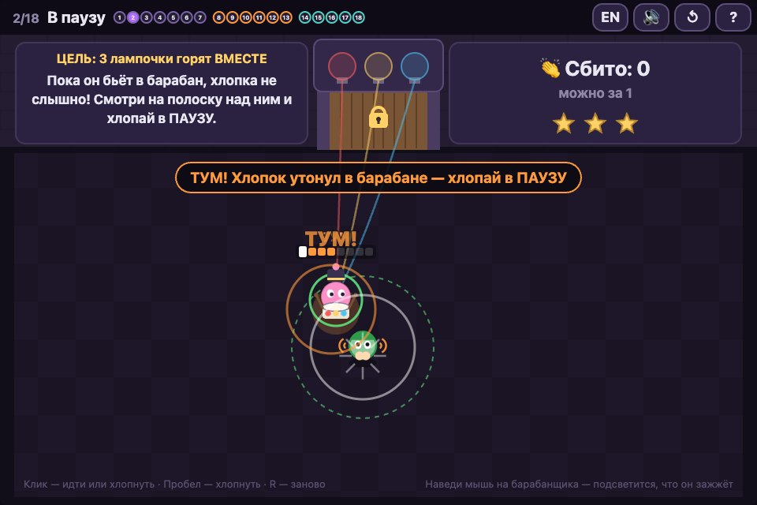
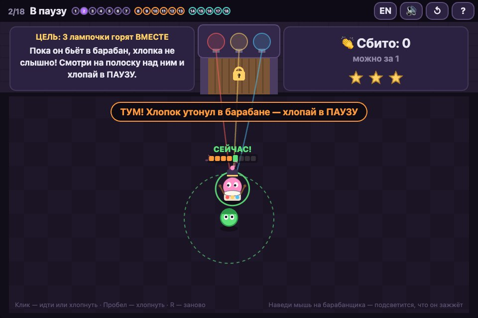
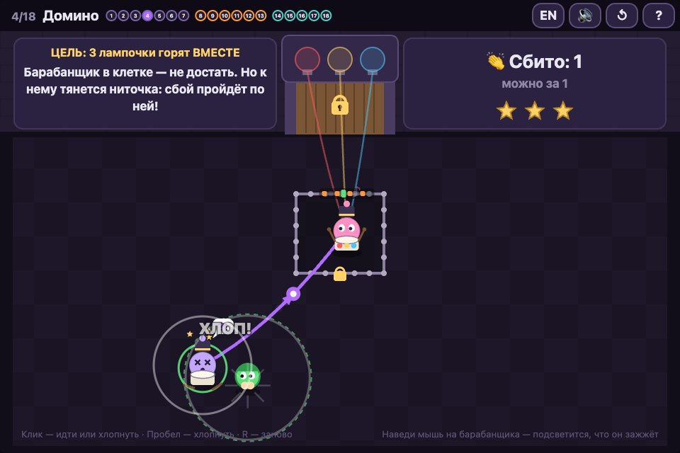
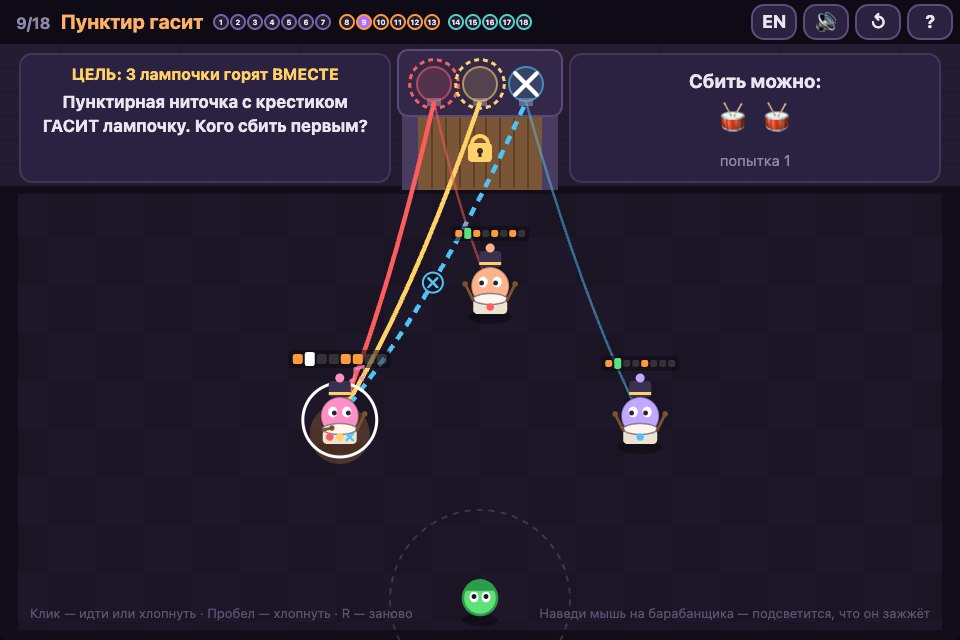
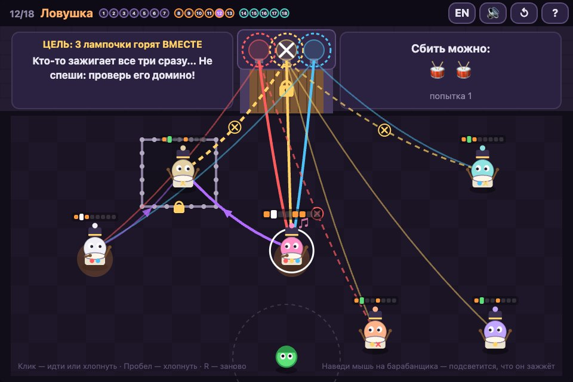
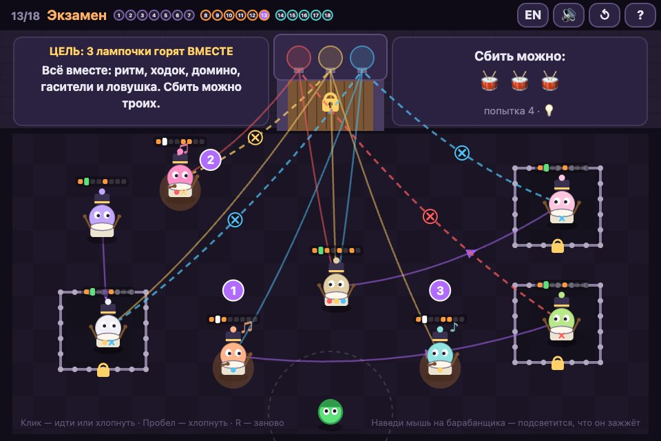
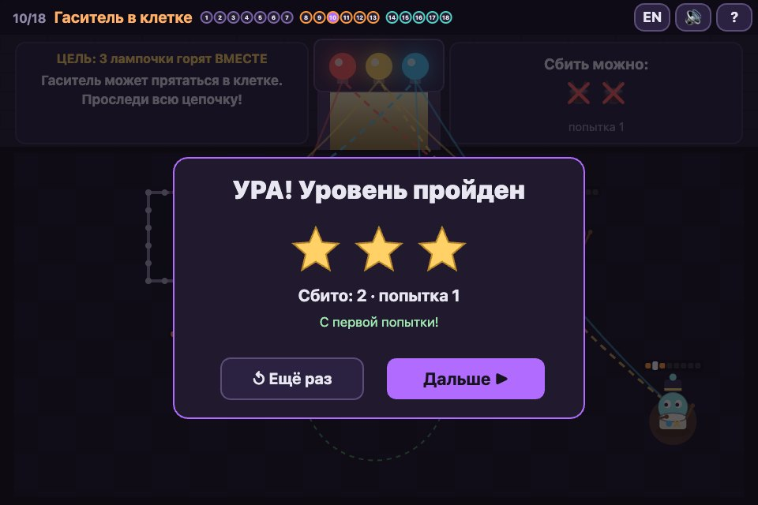
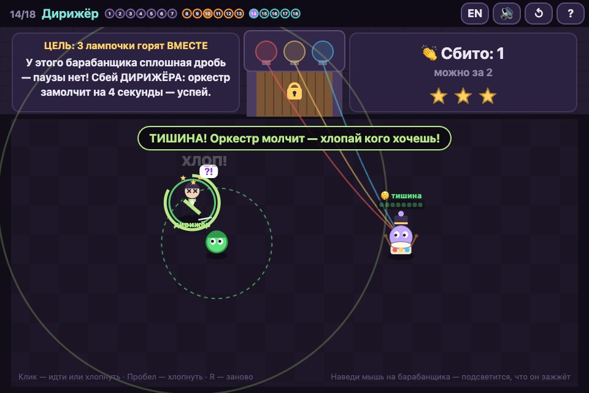
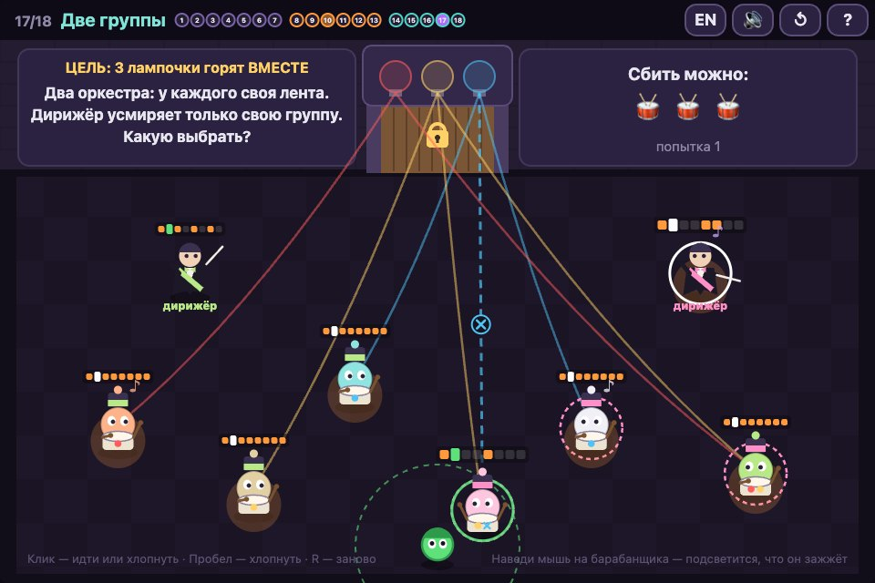

idea_generator · перебить × лейтмотив · визреференс v2.2
Лейтмотив
У каждого барабанщика своя песенка. Хлопни рядом с ним в паузу — он собьётся, и сбой побежит по его ниточкам к лампочкам и к другим барабанщикам. Хлопок в удар тонет в шуме. Три лампочки должны погореть вместе — тогда дверь откроется.
Вопрос прототипа: читают ли игроки ниточки и ритм — выбирают нужную пару, порядок и момент — или хлопают по всем подряд? В части 1 звёзды за число сбитых, в части 2 (лимит) — за число попыток.












Что есть что
Восемнадцать уровней — по одной новой штуке
- Хлопни! — клик → хлопок → лампочки → дверь (правило паузы выключено).
- В паузу — в удар хлопок тонет; подсказка «СЕЙЧАС!».
- Сразу двое — лампочки должны погореть вместе.
- Домино — клетка, сбой через фиолетовую ниточку.
- Выбери пару — читать ниточки; хаб с долгой барабанной дробью.
- Лови ритм — двое ходят навстречу; поймать момент встречи.
- Большая цепь — барабанщик → барабанщик → лампочка.
- Только двое — часть 2: лимит; ключ — «пустой» барабан.
- Пунктир гасит — порядок из-за гасителя.
- Гаситель в клетке — гаситель спрятан в домино.
- Камень-ножницы — три хлопка, единственный порядок.
- Ловушка — «зажигает все три», но домино гасит жёлтую.
- Экзамен — всё вместе, единственный порядок из трёх.
- Дирижёр — часть 3: дробь без пауз, ключ — тишина дирижёра.
- Четыре секунды — маршрут за время тишины.
- Дирижёр в клетке — тишину включает домино.
- Две группы — лимита хватает на один оркестр: какой?
- Оркестр — экзамен третьей части.
Кадры сняты из самого прототипа (играть), спека — spec.md. v2 заменила непонятную v1; v2.1 вернула ядро «перебить не в такт» одним правилом — хлопок в удар тонет — и добавила головоломки части 2; v2.2 — часть 3 «Оркестр» с дирижёром.